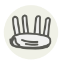

Carré d’agneau
Rack of lamb
| Nom latin | Ovis aries (rib rack) |
|---|---|
| Famille | Morceaux du boucher |
| Origine | Les huit premières côtes, manchonnées |
| Saison | mars – juin |
| Goût | Charnu · Délicat · Riche |
| Prix courant | 28–45 €/kg |
Ce que c’est
Huit côtes grattées jusqu’à l’os — « manchonnées » — jusqu’à ce que le carré devienne architecture ; deux carrés entrecroisés forment la haie d’honneur des tables de noces britanniques. Sous sa fine coiffe de gras loge l’agneau le plus tendre de la bête, taillé pour une croûte verte de persillade.
En cuisine
Saisissez d’abord la coiffe de gras, badigeonnez de moutarde, pressez la chapelure d’herbes, puis un rôtissage court et vif : rosé à l’os, reposé jusqu’à ce que les jus se calment.
S’accorde avec
Romarin Ail Moutarde Miel Thym
Même espèce
Agneau de Pauillac Agneau de pré-salé Agneau de Sisteron Animelles Cervelle d’agneau Gigot d’agneau
De saison en même temps
Selle d’agneau Germon (thon blanc) Alose Bonite à ventre rayé Barbue Omble chevalier
Une erreur ici, ou un oubli ? Dites-le nous